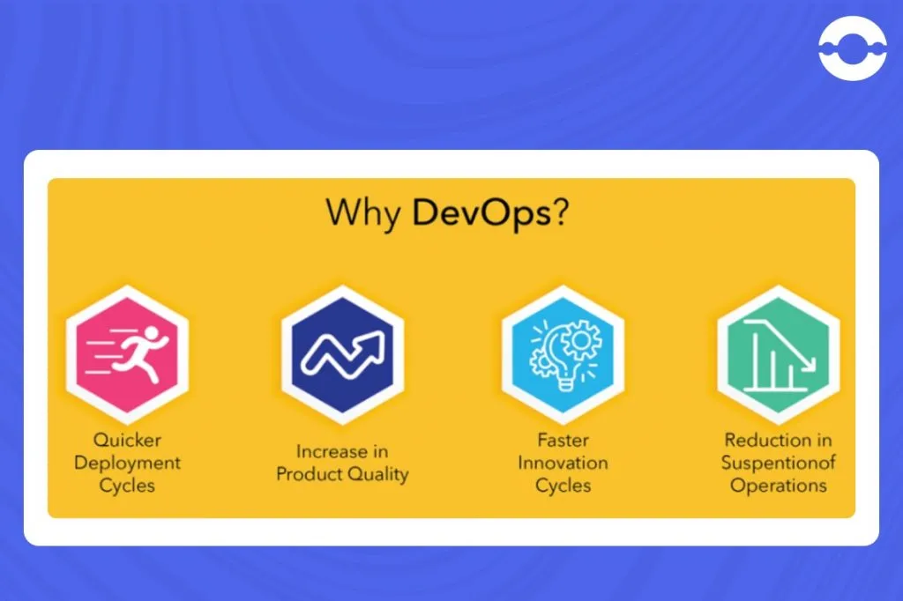

Why chasing both network engineering and devops?

System development in with network engineering skills is lethal! and FUN . Always wanted to understand more of what layer 4 and 5 and beyond in the OSI models are. because the real fun is in what severals call cloud engineering.